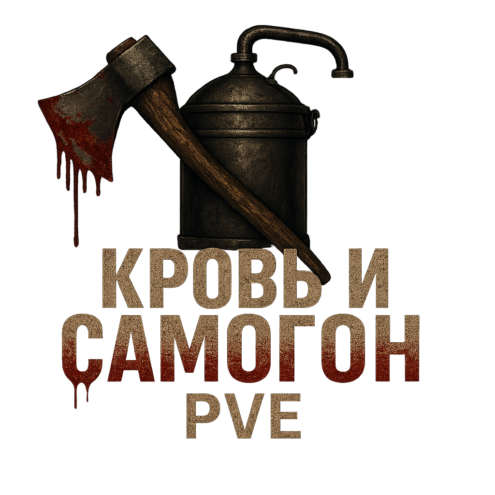

Полный вайп сервера 27.12.26.

Выживание без игроков-убийц: враг здесь только мир вокруг. Собирайте лут, стройте базу, гоните самогон и играйте спокойно.
109.248.4.178:2314
Как подключиться
Игроки не воюют друг с другом. Опасность идёт от заражённых и окружения.
Варите, торгуйте и обменивайте. Здесь это настоящая валюта.
Стройте и укрепляйте убежище, не боясь рейдов от других игроков.
Администрация на связи в Discord, события и вайпы анонсируются заранее.
Если лаунчер пишет, что не хватает модов, проверьте, что все они подписаны и обновлены.
Полный вайп сервера 27.12.26.
Все покупки являются добровольным пожертвованием на развитие сервера (приобретение модов, оплата аренды).